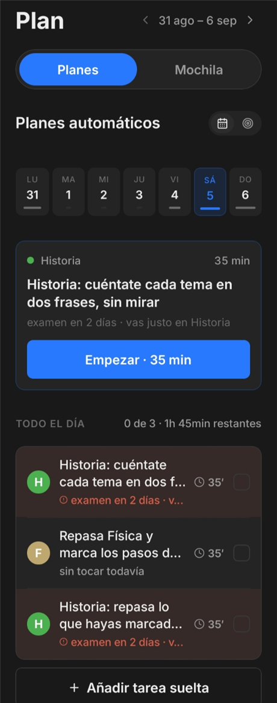
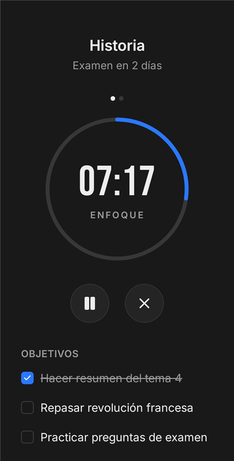
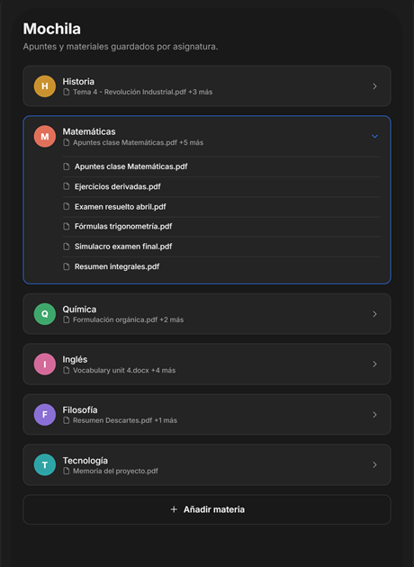
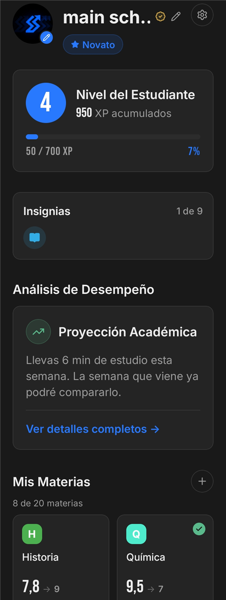

Schedio
SchedioMete tus asignaturas y tus exámenes
Una vez, al empezar el trimestre. Cinco minutos y ya no lo tocas.
Matemáticas
Historia
Química
Exámenes, tareas y progreso — sin buscar en cinco sitios distintos.
Gratis · Android · También como app web en iPhone
El aula virtual, las notas del móvil, el grupo de clase, la agenda de papel y lo que te acuerdas. Cuando llega la semana de exámenes no sabes por dónde empezar, porque no lo ves entero en ningún lado.
Schedio lo junta todo en un sitio.
Una vez, al empezar el trimestre. Cinco minutos y ya no lo tocas.
Ordena lo que tienes pendiente por lo cerca que está el examen, por tu nota en esa asignatura y por lo que te cuesta. Tú no decides nada: abres la app y ya está puesto.
Le das al temporizador y esa sesión cuenta. Al final del trimestre ves las horas que has echado de verdad, no las que crees que has echado.
Schedio lleva la cuenta de los días que no fallas y te sube de nivel con cada sesión. De nivel en nivel se sube de rango. No es un adorno: es la razón por la que abres la app un martes cualquiera de noviembre.
La V es un día de descanso: una tarde libre no te tira abajo tres semanas de racha.
Esto es el algoritmo de Schedio corriendo aquí mismo, el mismo que ordena tu plan dentro de la app. Mueve lo que quieras y mira cómo cambia el orden.
El simulador necesita JavaScript. Con los valores de partida, Schedio pondría Historia por delante de Matemáticas: está más cerca y tu nota es más baja.
Pesos reales: urgencia 40 · riesgo por nota 20 · dificultad 15 · cobertura 15 · tipo 10.
Cuatro pantallas, un solo sitio. Esto es lo que te llevas.




Desliza para verlas todas
No la ha hecho una empresa. La hago yo, y hace nada estaba donde estás tú.
Vengo de estar exactamente donde estás tú: agobiado la semana antes de un examen, sin saber por dónde empezar. Schedio no intenta enseñarte nada, porque lo que a mí me faltaba no eran apuntes: era saber qué tocaba hoy.
Por eso la app no tiene temario, ni vídeos, ni un chat que te resuelva el ejercicio. Solo quita de en medio lo que te frena antes de empezar: decidir.
Y se sigue haciendo con estudiantes. Lo que dicen los que la usan cambia la app: las últimas tres cosas que se han añadido las pidieron ellos.
Sí. En iPhone, Schedio funciona como aplicación web: la añades a la pantalla de inicio y se comporta igual que una app, sin pasar por ninguna tienda. Más adelante estará también en la App Store. La primera versión nativa es para Android. Mira cómo se instala.
Un calendario guarda lo que tú le metes y te lo devuelve igual: sabe que tienes un examen el jueves, pero no sabe qué hacer con esa tarde. Schedio decide en qué orden estudiar, cuánto tiempo dedicarle a cada cosa y qué toca hoy, cruzando lo cerca que está cada examen con tu nota y con lo que te cuesta esa asignatura. Eso es la diferencia entre apuntar y organizarte.
Sí. Cambias trimestres por cuatrimestres y exámenes por parciales y finales, y funciona igual: Schedio no entiende de cursos, entiende de fechas, de horas y de cuánto te juegas en cada asignatura. De hecho en la uni suele hacer más falta, porque nadie te va marcando el ritmo.
Sí a las dos. Schedio no depende del temario: organiza asignaturas, exámenes y horas, y eso es igual en 3º de la ESO que preparando la EBAU.
Hoy no. Lo que te quita de encima Schedio es la decisión de qué estudiar y cuándo — ahí es donde se va la energía antes de empezar, y eso ya lo resuelve sin depender de nada más. En próximas actualizaciones vamos a añadir algo para cuando necesites que te expliquen un tema, pero no es la razón por la que vas a abrir la app cada día: esa ya la tienes ahora.
Se guardan tus asignaturas, tus exámenes y tus sesiones para que la app funcione. No se venden ni se ceden a terceros. Puedes borrar tu cuenta y todo lo que hay dentro desde la propia app.
Gratis, en Google Play.
Gratis · Android · También como app web en iPhone